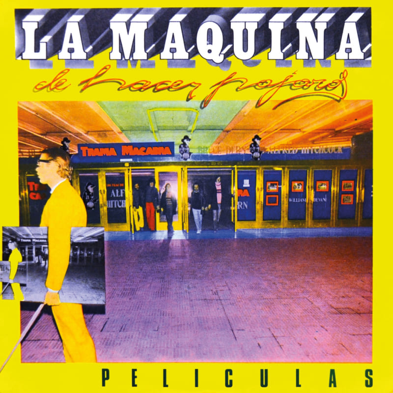

LA MAQUINA DE HACER PAJAROS - PELÍCULAS (1977)
Películas es el segundo y último álbum de estudio de la banda argentina de rock progresivo La Máquina de Hacer Pájaros, lanzado en 1977 a través del sello Talent Microfón. Este álbum exhibe una mayor variedad en las ideas musicales, así como un trabajo más ampuloso en los arreglos de los temas en comparación con el disco anterior de la banda, La Máquina de Hacer Pájaros, editado en el año 1976. El arte gráfico estuvo a cargo del famoso diseñador Juan Oreste Gatti. En el año 2007, la revista Rolling Stone de Argentina ubicó el álbum en el puesto 71.º de su lista de «Los 100 mejores álbumes del rock argentino».
